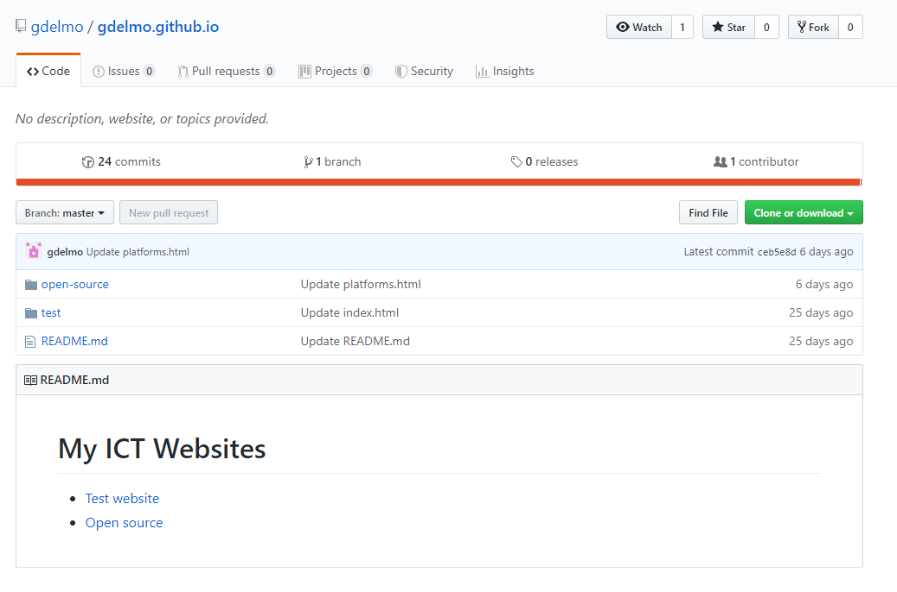

Open source
What is open source?
Open source means sharing code with others so that they can make changes and contribute on your project. A company can decide to make one of their projects open source and release the code online. This means that everyone can go online and see the code that is being used. They can then make contributions to the original product, copy the code and make their own version, or have access to it for free without having to pay.
One of the benefits of an open source community is that users have free access to code and can compile the source code to build the program themselves. This is useful for programs which you think might be malicious. You can inspect the source code yourself instead of only having an executable binary which you can't inspect.
A repository

A repository is like a folder where open source projects live. Here, you usually find code for software, either professional or personal, and many open source platforms allow other special features that you can do with code. In the picture above, you can see this website is acutally being hosted on a GitHub respository, and this is what it looks like. Because this repository is public, anyone on the web can navigate to github.com/gdelmo/gdelmo.github.io (the URL of the repository on GitHub) and "clone" it. Cloning into a repository means that you can make a copy of it on your local computer at home to make some changes and then share them with the world. In the case that someone else makes changes, because they are not the owners of the repository on GitHub, they would need to make a "pull request". A pull request means that they are asking me for permission to add their additions into my software. In the case that I decide to accept this pull request, their changes will be visible to the community. This is called contributing to other open source projects, and is very important.
Contributing to open source projects
Contributing to open source projects is very important in an open source community. Making contributions to code means that people will make changes to the code according to their needs or in order to fix something that wasn't working. Some software companies use open source to make its users interact with the code they write to improve it with suggestions coming from the users themselves instead of the company.